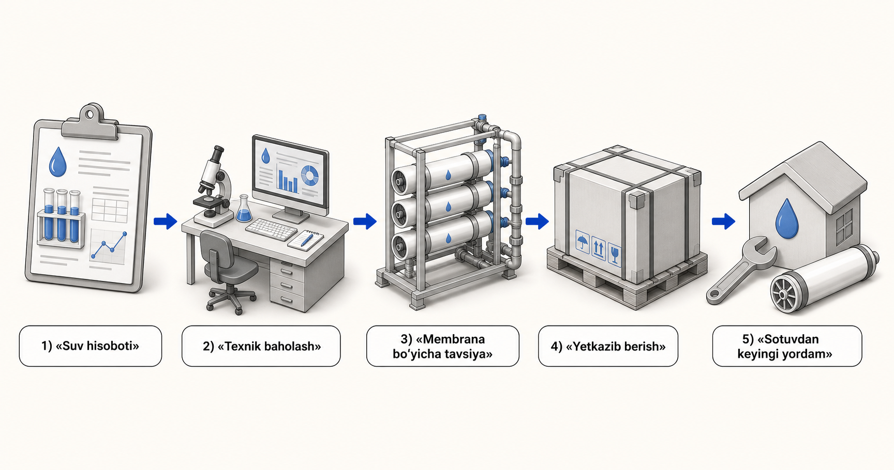

Teskari osmos (RO)
RO keng erigan tuzni kamaytirish yoki yuqoriroq tozalikdagi mahsulot suvi talab qilinganda hisobga olinadi. Ozuqa kimyosi, bosim, dastlabki ishlov berish va konsentrat sharoitlari amaliy chegarani belgilaydi.
Yuchen Water - Vontron membrana distribyutori va dileri. Biz uy-joy, tijorat va sanoat loyihalari uchun membrana materiallarini yetkazib beramiz va tegishli uskunalarni texnik qo'llab-quvvatlaymiz. Ushbu markaz xaridorlardan mahsulot modelini tanlashni so'ramasdan membrana toifalari va ilovalarini tushuntiradi. Joriy suv yoki texnologik suyuqlik hisoboti, tozalash maqsadi va ish haqida qisqacha ma'lumot birinchi o'rinda turadi.

Membran toifalari ajratish rollarini tavsiflaydi. Ular suv hisoboti yoki yakuniy material tavsiyasi o'rnini bosa olmaydi.
RO keng erigan tuzni kamaytirish yoki yuqoriroq tozalikdagi mahsulot suvi talab qilinganda hisobga olinadi. Ozuqa kimyosi, bosim, dastlabki ishlov berish va konsentrat sharoitlari amaliy chegarani belgilaydi.
NF selektiv erigan turlarni va organik ajratishni qo'llab-quvvatlashi mumkin. Saqlangan va o'tkazuvchan maqsadlar, pH, harorat va tozalash shartlari ko'rsatilishi kerak.
UF va MBR rollari odatda to'xtatilgan, kolloid va biologik materiallarga qaratilgan. Ular oxirgi to'siqlar yoki qattiqroq membrana bosqichlaridan oldin dastlabki ishlov berish bo'lishi mumkin.
Dengiz suvi va sho'r suvni qo'llash uchun material tanlashdan oldin sho'rlanish, ion, harorat, qabul qilish, oldindan tozalash va yuqori bosimli uskunalarni tekshirish kerak.
Manbadan va maqsadli foydalanishdan boshlang. Har bir yo'l avtomatik model tanlashga emas, balki hisobot nazorat ro'yxatiga va texnik muhokamaga olib keladi.
Sho'rlanish, ionlar, harorat, qabul qilish o'zgaruvchanligi, biologik xavf, maqsadli o'tkazuvchanlik va konsentratsiya cheklovlarini ko'rib chiqing.
Qattiqlik, ishqoriylik, kremniy dioksidi, temir, marganets, gazlar, sho'rlanish va mahalliy ahamiyatga ega bo'lgan ifloslantiruvchi moddalarni tekshiring.
Dezinfektsiyalash vositalari, organik moddalar, qattiqlik, ta'm maqsadlari, kerakli ishlab chiqarish va quyi oqimdan foydalanishni tasdiqlang.
Ishlab chiqarish jarayonini, o'zgaruvchanligini, organik moddalarni, yog'larni, metallarni, qattiq moddalarni, qayta foydalanish maqsadini va konsentratlarni qayta ishlashni tavsiflang.
To'liq ion muvozanatini, kichik miqyosdagi xavflarni, organiklarni, o'zgaruvchanlikni va membrana qadamining mo'ljallangan rolini ta'minlang.
To'liq tarkibni va ajratish maqsadini ayting. Membran-materialni qo'llab-quvvatlash to'liq ekstraksiya jarayoni yoki tiklanish natijasini va'da qilmaydi.
Saqlangan komponentlar, mahsulot sifati maqsadlari, sanitariya, pH, harorat, tozalash va dalillar talablarini aniqlang.
Imkoniyatlar yorlig'iga emas, balki kirish suvi, talab, bosim, tozalash moslamasi arxitekturasi, dastlabki tozalash va almashtirishga mos keladi.
Veb-sayt tarkibi toifalar darajasida texnik ta'lim beradi. Yakuniy material, asbob-uskunalar yoki ishlash to'g'risida qaror qabul qilishdan oldin to'liq hisobot va tasdiqlangan operatsion brifing talab qilinadi. Yuchen Water Vontron membranalarni ishlab chiqarishga da'vo qilmaydi va ko'rib chiqilmagan oqim uchun oqim, tiklanish, ishlash muddati, selektivlik yoki loyiha natijalarini va'da qilmaydi.
Ozuqa-suv kimyosi, tozalash maqsadlari va ish sharoitlari RO, NF va UF membrana toifalari oʻrtasida tanlovni qanday boshqarishini bilib oling.
Qo'llanmani o'qing →Dengiz suvi yoki sho'r suvli membrana tavsiyalaridan oldin keladigan hisobot ma'lumotlari, dastlabki tozalash va uskunalar savollarini tushuning.
Qo'llanmani o'qing →Minerallar, metallar, gazlar, organik moddalar va operatsion maqsadlarni to'liq tahlil qilishdan er osti suvlari va quduq suvi membranalarini tozalashni rejalashtirish.
Qo'llanmani o'qing →Oqava suvlar tarixi, qayta foydalanish maqsadlari va oldindan tozalash xavfi UF, NF va RO ning sanoatdan qayta foydalanish loyihasidagi rolini qanday aniqlashini koʻring.
Qo'llanmani o'qing →Yuqori tuzli oqava suv uchun membrana materiallarini yoki ZLD bilan bog'liq yordamni muhokama qilishdan oldin kimyo, o'zgaruvchanlik va jarayon-maqsadli ma'lumotlarni tayyorlang.
Qo'llanmani o'qing →Tuzli ko'l sho'rlari va litiy bilan bog'liq suyuqliklar uchun NF, RO yoki UF membrana materiallarini muhokama qilishdan oldin qanday tarkib va jarayon-maqsadli ma'lumotlar kerakligini bilib oling.
Qo'llanmani o'qing →Turar-joy va engil-tijorat RO membrana materiallarini namuna yorlig'idan ko'ra suv sifati, kundalik talab, uskunaning mosligi va xizmat ko'rsatish shartlaridan tanlang.
Qo'llanmani o'qing →Faollashtirilgan uglerod ROgacha oksidlovchi va organik nazoratni qanday qo'llab-quvvatlashi mumkinligini va nima uchun uglerod tanlash hali ham suv tahlili va tizim sharoitlariga bog'liqligini tushuning.
Qo'llanmani o'qing →Faollashtirilgan uglerod ROgacha oksidlovchi va organik nazoratni qanday qo'llab-quvvatlashi mumkinligini va nima uchun uglerod tanlash hali ham suv tahlili va tizim sharoitlariga bog'liqligini tushuning.
Qo'llanmani o'qing →Rasmiy havola joriy membrana toifalari va hujjatlari uchun asosiy ma'lumotnoma sifatida taqdim etiladi. Mahsulot ma'lumotlari o'zgarishi mumkin, shuning uchun aniq material va joriy rasmiy hujjat texnik ko'rib chiqish vaqtida tasdiqlanadi. Vontron official industrial membrane overview · Vontron official UF membrane overview
Chunki manba nomlari va TDS barcha masshtablash, ifloslanish, muvofiqlik va davolash-maqsadli xavflarni tavsiflamaydi.
Yo'q. Bu xaridorlarga to'g'ri ma'lumot tayyorlashga yordam beradi; yakuniy tavsiya hisobot va ish holatini ko'rib chiqishdan so'ng.
Ha. Asosiy ta'minot membrana materiallari bo'lib, oldindan ishlov berish, korpuslar, nasoslar, filtrlash, boshqaruv elementlari, ishga tushirish bo'yicha ko'rsatmalar va almashtirishni rejalashtirish uchun tegishli yordam beradi.